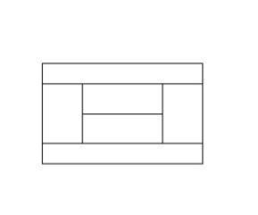
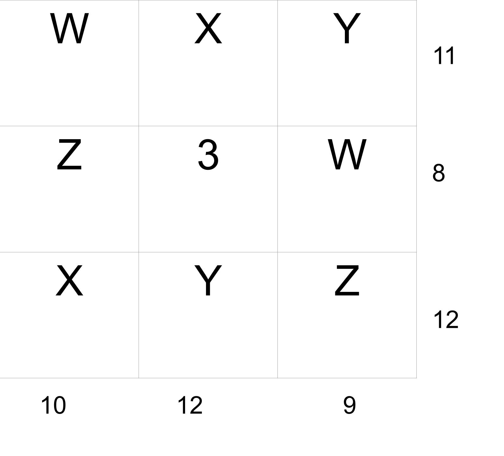

Lollies are sold in bags of 750g that cost $3.30. Work out the cost of the lollies in dollars per kg.
A rectangular courtyard covers 432m2. The length is three times greater than the width. What is the length and width of the courtyard?
In the 2006 census the population of New Zealand was 4.03 million. 30% of the country’s population live in Auckland and 9% live in Christchurch. How many more people live in Auckland than Christchurch?
This is a plan view of a tennis court without the net.. How many rectangles are there in total in the diagram?
A ship gets lost at sea and starts doing circles. It started facing NNW and turned a full three turns in a clockwise direction and then some more before ending up facing ESE. How many degrees in total did the ship turn?
A campanologist is someone who rings bells in a church. Two campanologists ring bells by pulling on the rope at different time intervals to each other. One pulls their rope every 11 seconds and the other pulls on their rope every 15 seconds. If they start pulling on their ropes at the same time, after how many minutes and seconds will they again pull down on their ropes at exactly the same time?
A Formula 1 car has tyres with a diameter of 68cm. The race track at Pukekohe is 2.8km. How many complete revolutions in total will the four tyres on a Formula 1 car turn during one lap at Pukekohe?
What is the sum of the first 12 triangular numbers?
Andrea, Bill, Charlie, Derek and Eric are all friends and go to the cinema one night. In their seating preferences Derek and Andrea have to sit at the ends of the row of 5 people. The other three friends can sit in any order between Derek and Andrea. How many possible combinations of seating plans are possible?
Divide 110 into two parts so that one will be 150 percent of the other. What are the 2 numbers?
Use each of the digits 1, 2, 3, 4, 5 and 6 once only, in this multiplication problem to make it correct.
? ?
x ?
——
? ? ?
While working in an office, Martin types three pages in the same time it takes Gregory to type 2. If they type an 80 page document between them, how many pages will each type?
Here are three facts.
A + A = B C - A = 6 C + C = B + B + B
Find A, B and C
Emma’s weight in kg leaves a remainder of 2 when divided by 5 and a remainder of 5 when divided by 7. If Emma is an average 12 year old girl, what is her weight?
A million seconds from now, what will the date be and what will the time be to the nearest hour (work from the start time of this competition which was 6pm)?
In a badminton club, there are 20 Third Grade players. If everyone plays everyone else, how many games will take place?
An arrowhead has three equal angles and the fourth is five times the sum of the other three. How big is the largest angle?
The numbers around the outside are the totals for each row or column. What do the numbers w, x, y and z stands for?
Right now, Garry is three times as old as Brian. A decade earlier, Garry was two years older then Brian is now. What is the sum of their ages?
The number 1001 has exactly 3 prime-number factors. What are they?